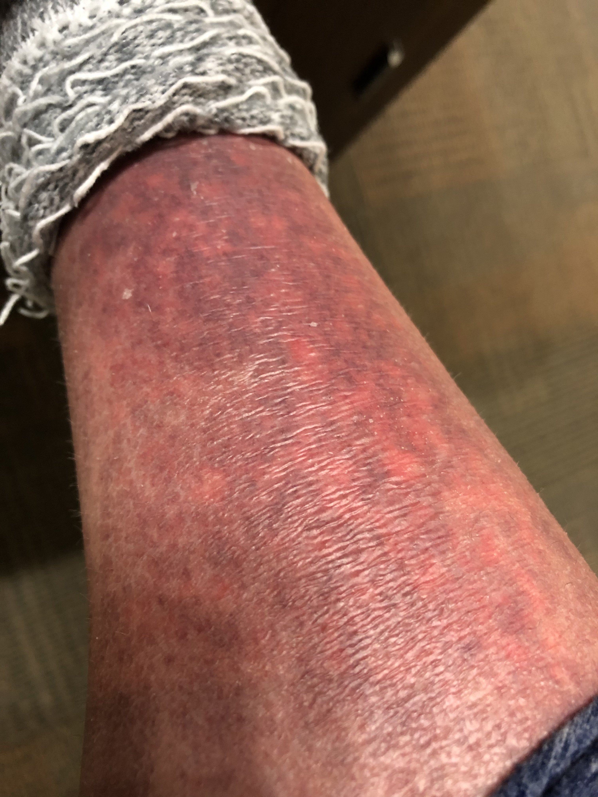
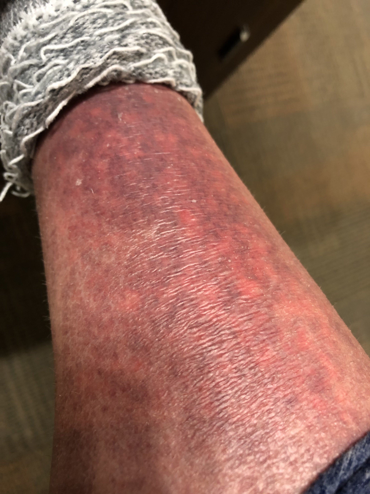

zinc oxide
... a physical or mineral sunscreen ingredient
... applied topically, zinc aids in wound healing and skin regeneration, as well as deflects UV rays
titanium dioxide
... a physical or mineral sunscreen ingredient
... was used in Dunkin Donuts powdered donuts until 2015
oxybenzone
... a chemical sunscreen ingredient
... allergenic and has relatively high rates of skin reactions
... might be linked to hormonal disruptions
avobenzone
... a chemical sunscreen ingredient
... breaks down quickly in the sun, so it only offers short term coverage
octisalate
... a chemical sunscreen ingredient
... only able to block UVB rays, so it is not on its own broad-spectrum protection
... used to stabilize avobenzone to extend sun protection
octocrylene
... a chemical sunscreen ingredient
... has been shown to acculumate in aquatic life and cause adverse effect
 
